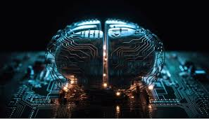

O que é Inteligência Artificial - IA?
A inteligência artificial (IA) é um conjunto de tecnologias que permite que os computadores aprendam, raciocinem e realizem várias tarefas avançadas de maneiras que antes exigiam inteligência humana, como entender a linguagem, analisar dados e até mesmo fornecer sugestões úteis. É uma tecnologia transformadora que pode trazer mudanças significativas e positivas para as pessoas, as sociedades e o mundo.
Ela abrange muitas disciplinas diferentes, como ciência da computação, estatísticas e análises de dados, engenharia de hardware e software, linguística, neurociência e até mesmo filosofia e psicologia.
A IA ensina os computadores a fazerem coisas incríveis que nossos cérebros fazem, como entender o mundo ao redor, aprender coisas novas e até ter ideias inovadoras. Por exemplo, a IA é usada no reconhecimento óptico de caracteres (OCR) para extrair texto e dados de várias imagens e documentos. Esse processo transforma conteúdo não estruturado em dados estruturados e prontos para uso comercial, ajudando a descobrir insights valiosos.

Como Funciona?
As técnicas de inteligência artificial, embora diversas, dependem fundamentalmente de dados, algoritmos e poder computacional. Os sistemas de IA aprendem e melhoram por meio da exposição a grandes quantidades de dados, identificando padrões e relações que os humanos podem não perceber. Esses dados servem como material de treinamento, e a qualidade e a quantidade deles são cruciais para o desempenho da IA.
Como já mencionamos, a IA não é uma tecnologia única, mas um campo amplo que abrange várias áreas principais:
- Machine learning (ML): é um tipo de IA em que os sistemas aprendem com os dados para identificar padrões e fazer previsões ou tomar decisões sem programação direta. Imagine ensinar um computador a reconhecer um pássaro mostrando milhares de fotos de pássaros. Ele aprende sozinho como um pássaro se parece.
- Visão computacional: essa área permite que os computadores "vejam" e interpretem informações visuais do mundo, como imagens e vídeos. Ela é usada em tudo, desde reconhecimento facial até carros autônomos.
Onde ela Aparece?
Usamos a IA todos os dias em apps de navegação como o Google Maps, em recomendações personalizadas em sites de compras, em filtros de spam no seu e-mail e em assistentes virtuais como o Gemini Live.
Por que isso é importante?
A IA nos ajuda a resolver alguns dos desafios mais difíceis do mundo, desde acelerar a pesquisa médica até criar cadeias de suprimentos mais eficientes e combater as mudanças climáticas.